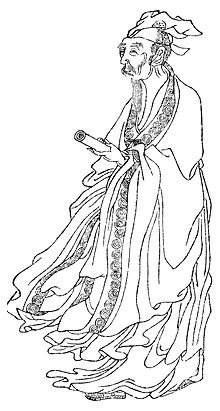

Thu Giang Tống Khách

hủ bút:
Đầu hạ vừa rồi, tôi đi công tác miền Đông Bắc, trên đường có ghé thăm họa sĩ Đặng Đình Nguyễn. Nhà anh thuộc khu vực một vùng đất nằm giữa ngã ba sông. Trước đây, muốn ra vùng đất này, phải đi đò từ thị xã Quảng Yên sang, nay có cây cầu cứng nên giao thông thuận tiện. Đặng Đình Nguyễn tâm sự, cả tuổi thơ và thời thanh niên của mình, anh luôn ám ảnh bởi tiếng gọi đò, nhất là vào những buổi chiều đống tháng giá. Giờ đây, lâu lâu trong giấc ngủ, tiềm thức vẫn thảng thốt tiếng gọi đò. Với riêng mình, mấy tháng qua, tôi liên miên với những chuyến công tác dọc miền Trung, miền Đông Nam Bộ và cả khu vực đồng bằng sông Cửu Long... Mùa mưa, nước nổi, sông suối chứa chan. Mỗi khi băng qua một cây cầu, lặng nhìn dòng nước cuộn chảy, xa xa là những con đò chơi vơi trên sông nước, tôi lại nhớ đến tâm sự của Đặng Đình Nguyễn về tiếng gọi đò khuya sớm... Hình như, mỗi khúc sông, bến đò trên mặt đất này, dù Đông Tây, Nam Bắc, đâu cũng gắn với những mối tình đánh mất, gắn với những cuộc chia tay, tiễn đưa lưu luyến thì phải?...
Lại nhớ, Bạch Cư Dị có bài thơ Thu giang tống khách rất chi là tuyệt hảo... Tuyệt nhất là 2 câu kết " Bất tuý Tầm Dương tửu,/Yên ba sầu sát nhân ". Ôi, thật khổ là rượu muốn uống cho say để quên hết cái sự đời, mà càng uống lại càng tỉnh. Thêm nữa, khói sóng trên sông thì buồn đến chết người... Ừ, mà sao, các bậc tiền nhân thời Đường, cứ bị ám ảnh bởi quang cảnh khói sóng trên sông lúc hoàng hôn thế nhỉ? Bài thơ Hoàng Hạc lâu, Thôi Hiệu đã chẳng thấm thía, nén nỗi buồn mà bật ra "Yên ba giang thượng sử nhân sầu " ( Trên sông khói sóng cho buồn lòng ai- Tản Đà dịch ) là gì?

Về tiểu sử tóm tắt: "Bạch Cư Dị, chữ Hán: 白居易) (772-846) tự là Lạc Thiên (樂天, hiệu là Hương Sơn cư sĩ là nhà thơ Trung Quốc nổi tiếng thời nhà Đường. Tác phẩm nổi tiếng của Bạch Cư Dị ở Việt Nam có lẽ là bài Tỳ bà hành, Trường Hận Ca. Danh tiếng của ông ngang với Lý Bạch (701-762), Đỗ Phủ (712-770) và Vương Duy ( 701-761 )... Tổ tiên ông là người gốc Thái Nguyên, Sơn Tây, sau di cư tới huyện Vị Nam, Thiểm Tây. Ông là một trong những nhà thơ hàng đầu của lịch sử thi ca Trung Quốc. Đối với một số người yêu thơ văn thì người ta chỉ xếp ông sau Lý Bạch và Đỗ Phủ. Mười lăm tuổi ông đã bắt đầu làm thơ, thuở nhỏ nhà nghèo, ở thôn quê, đã am tường nỗi vất vả của người lao động. Năm Trinh Nguyên thứ 16 (năm 800), ông thi đỗ tiến sĩ được bổ làm quan trong triều, giữ chức Tả thập di. Do mâu thuẫn với tể tướng Lý Lâm Phủ, ông chuyển sang làm Hộ Tào tham quân ở Kinh Triệu. Năm Nguyên Hòa thứ 10 (815), do hạch tội việc tể tướng Vũ Nguyên Hành bị hành thích và ngự sử Bùi Độ bị hành hung, nhóm quyền thần cho là ông vượt qua quyền hạn, đày làm tư mã Giang Châu. Giai đoạn từ năm 821 tới năm 824 làm thứ sử Hàng Châu, năm 825 làm thứ sử Tô Châu, sau được triệu về kinh làm Thái Tử thiếu phó. Năm Hội Xương thứ 2 (842) về hưu với hàm thượng thư bộ Hình, sau mất tại Hương Sơn, Lạc Dương. Những năm đầu, ông cùng Nguyên Chuẩn ngâm thơ, uống rượu, được người đời gọi là Nguyên Bạch. Sau này, khi Nguyên Chuẩn mất, lại cùng Lưu Vũ Tích, hợp thành cặp Lưu Bạch...",
Sau đây là bài " Thu giang tống khách"
* Nguyên bản tiếng Hán
秋江送客
秋鴻次第過，
哀猿朝夕聞。
是日孤舟客，
此地亦離群。
蒙蒙潤衣雨，
漠漠冒帆雲。
不醉潯陽酒，
煙波愁殺人。
* Bản âm Hán Việt
Thu giang tống khách
Thu hồng thứ đệ quá,
Ai viên triêu tịch văn.
Thị nhật cô chu khách,
Thử địa diệc ly quần.
Mông mông nhuận y vũ,
Mạc mạc mạo phàm vân.
Bất tuý Tầm Dương tửu,
Yên ba sầu sát nhân.
* Dịch nghĩa :
Sông thu tiễn khách
Mùa thu, chim hồng lần lượt bay qua
Vượn hôm mai kêu thảm thiết
Ngày ấy, khách trên thuyền cô quạnh
Nơi đây cũng là nơi chia lìa
Mưa ướt thấm dần vào áo
Mây man mác chắn cánh buồm
Rượu Tầm Dương ( uống ) mãi chẳng say
Khói sóng ( thì ) buồn đến chết người
* Dịch thơ
Nhạn thu lần lượt bay qua
Thảm thương tiếng vượn hôm đà lại mai
Ngày nào một chiếc thuyền ai
Nước non này cũng chia phôi cánh đàn
Mưa dầm vạt áo như chan
Buồm ai man mác mây ngàn đón ngang
Chẳng say chén rượu Tầm Dương
Khỏi sao sóng khói sầu thương chết người
( Tản Đà )
Thu về, hồng sải cánh,
Sớm tối vượn nỉ non.
Ngày nao, con thuyền lẻ,
Cũng chốn đây chia lìa.
Mưa dầm dề ướt áo,
Mây man mác theo buồm.
Rượu Tầm Dương uống mãi,
Khói sóng lút sầu thương.
( Ngô Văn Phú )